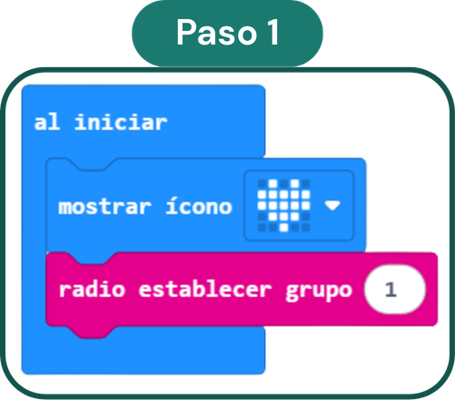
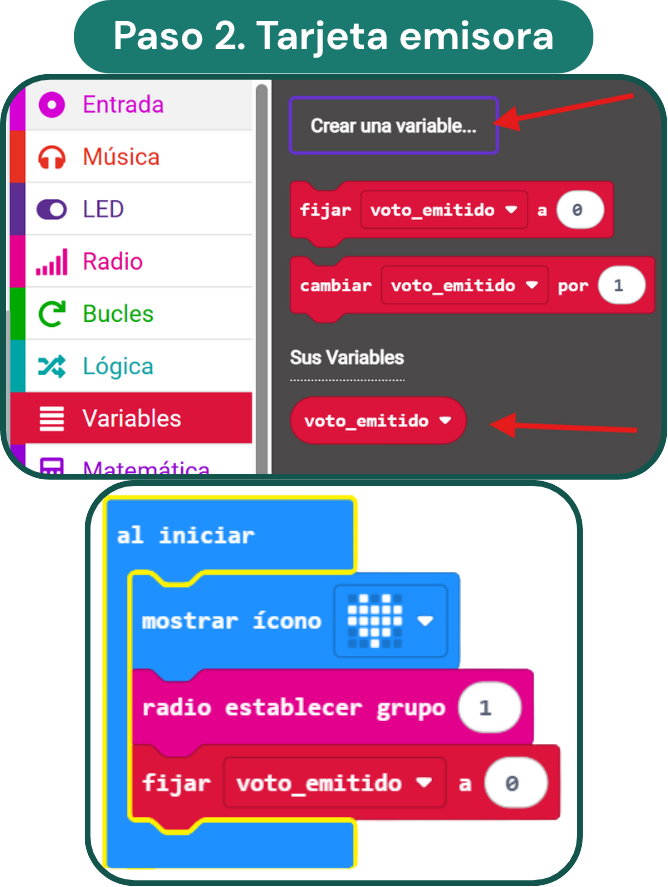
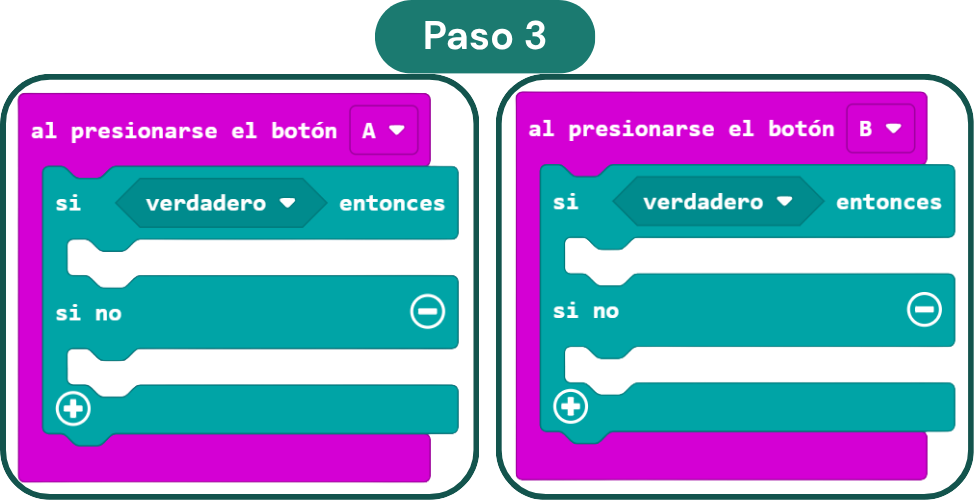

🧰 Componentes necesarios
- Al menos 2 placas micro:bit (una receptora para el docente + emisoras para el alumnado)
- Pantalla de LED (incorporada)
- Antena de radio (incorporada)
- Cable USB y MakeCode
¿Qué aporta al aula?
- Fomenta la toma de decisiones democrática
- El voto es secreto: todo el mundo se atreve a opinar
- Feedback inmediato para el docente
- Integra la tecnología con un propósito real en clase
Paso a paso

Configura "Al iniciar" en todas las placas
En todas las micro:bit (emisoras y receptora), dentro del bloque "Al iniciar" añade dos cosas: un "mostrar ícono" (categoría Básico) para confirmar que la programación se ha cargado, y el bloque "radio establecer grupo 1" (categoría Radio).

Crea la variable "voto_emitido"
Ve a Variables → Crear una variable... y nómbrala voto_emitido. Después, dentro de "Al iniciar", añade el bloque "fijar voto_emitido a 0". Esto indica que la placa todavía no ha votado.

Añade los bloques de botón A y botón B
Desde Entrada, arrastra dos bloques "al presionarse el botón A" y "al presionarse el botón B". Dentro de cada uno, añade una estructura "Si – Si no" (categoría Lógica). Esta estructura controlará si la placa ya ha votado o no.
Completa la lógica del voto (emisora)
Dentro del "Si", añade la condición voto_emitido = 0 (el bloque "=" está en Lógica). Si es verdad:
→ radio enviar cadena "A" (o "B" para el botón B)
→ fijar voto_emitido a 1
→ mostrar cadena "A" (o "B")
Dentro del "Si no" (ya ha votado): mostrar ícono X.
Configura "Al iniciar" en la receptora
Abre un nuevo proyecto en MakeCode para la placa receptora. En "Al iniciar", incluye el icono de confirmación y el bloque "radio establecer grupo 1" (el mismo número que en las emisoras).
Crea además dos variables: Total_A y Total_B, y fíjalas a 0 dentro de "Al iniciar".
Programa la recepción del voto
En la categoría Radio, busca el bloque "al recibir radio recibirCadena". Dentro, añade una estructura "Si – Si no, si – si no" (pulsa el + para añadir el tercer hueco).
→ Si recibirCadena = "A": cambiar Total_A por 1 + mostrar ícono ✓
→ Si no, si recibirCadena = "B": cambiar Total_B por 1 + mostrar ícono ✓
→ Si no: mostrar ícono de error
Consulta y reinicia los resultados
Programa los botones de la placa receptora:
→ Botón A: mostrar cadena "Total A: " + Total_A
→ Botón B: mostrar cadena "Total B: " + Total_B
→ Botón A+B: mostrar "Reinicio Votacion" + fijar Total_A a 0 + fijar Total_B a 0
🚀 Ideas para usar en clase
- Úsala al final de la hora como salida de ticket: "¿Has entendido la clase de hoy?" A = Sí, B = No. Feedback inmediato sin que nadie se sienta señalado.
- Si solo tienes una micro:bit para el alumnado, quita el bloque "si/si no" de la emisora y ponla en la puerta de clase para votar al salir a modo de autoevaluación.
- Preguntas de ejemplo: "¿Necesitas una explicación extra?" · "¿Te ha resultado útil la clase?" · "¿Tienes los deberes listos?"
- Si necesitas una opción C, prográmala en el botón táctil del logotipo: en Entradas, busca "al pulsar el logotipo" y añade la opción también en la receptora dentro de "al recibir radio recibirCadena".
¿Listo para programarlo? 🗳️
Dos proyectos distintos: uno para las placas emisoras del alumnado y otro para tu placa receptora.